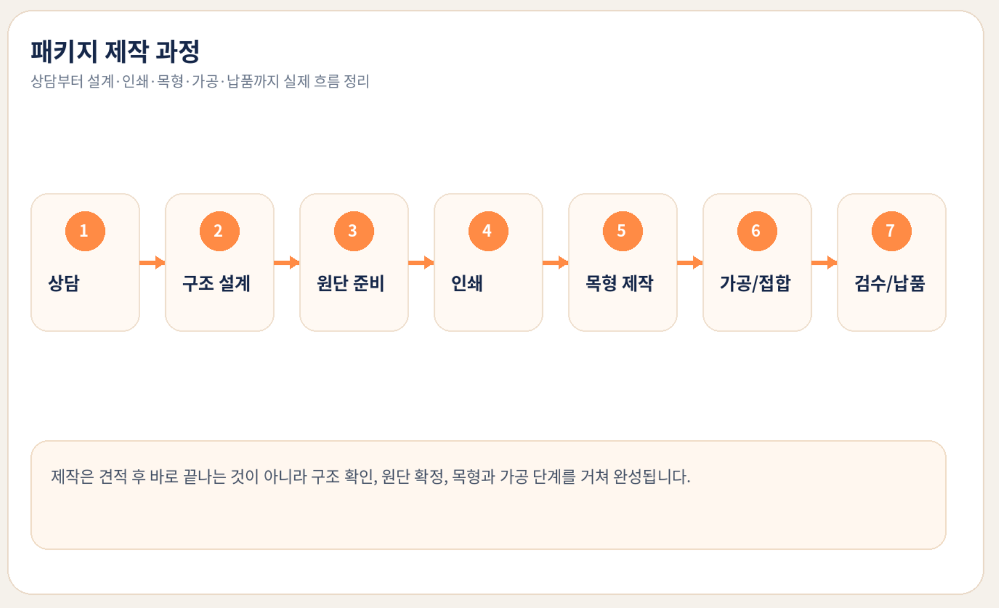

박스 제작 프로세스
박스 제작은 보통 상담 및 견적 → 구조 설계 → 원단 준비 → 인쇄 → 목형 제작 → 가공 및 접합 → 품질 검사 및 납품 순으로 진행됩니다. 어떤 자료가 언제 확정되는지 이해하면 납기 예측이 훨씬 정확해집니다.
견적이 끝나면 바로 인쇄에 들어간다고 생각하기 쉽지만, 실제 제작은 구조 설계와 원단 확정, 목형, 가공, 검수 단계를 거쳐 완성됩니다. 어떤 단계에서 무엇이 결정되는지 미리 알면 준비도 쉬워집니다.

박스 제작은 보통 상담 및 견적 → 구조 설계 → 원단 준비 → 인쇄 → 목형 제작 → 가공 및 접합 → 품질 검사 및 납품 순으로 진행됩니다. 어떤 자료가 언제 확정되는지 이해하면 납기 예측이 훨씬 정확해집니다.
이 단계에서 기준이 명확해야 구조와 원단도 빠르게 정리됩니다.
제품에 맞는 박스 구조를 설계합니다. 필요 시 CAD 설계, 샘플 제작, 구조 테스트가 함께 진행됩니다. 특히 끼움 구조, 내부 고정, 특수 개봉 방식이 있는 경우 이 단계 비중이 커집니다.
골판지라면 라이너지와 골심지를 결합한 원단을 준비하고, 칼라박스라면 합지 여부와 표면지를 확정합니다. 구조와 원단은 별개가 아니라 동시에 맞아야 결과가 안정적으로 나옵니다.
박스 디자인을 인쇄합니다. 대표적으로 플렉소 인쇄, 오프셋 인쇄, 디지털 인쇄가 사용됩니다.
박스 구조에 맞는 칼날 목형을 제작합니다. 일반 구조는 비교적 단순하지만, 맞춤형 구조나 다이컷 박스는 목형의 완성도가 조립성과 생산성에 큰 영향을 줍니다.
최종 조립성과 출고 안정성을 좌우하는 단계입니다. 접는 순서와 접착 라인이 잘 잡혀야 현장 작업성도 좋아집니다.
단순히 물건을 보내는 단계가 아니라, 실제 출고 환경에 맞게 포장 방식과 납품 조건을 확인하는 마지막 과정입니다.
박스 제작 과정, 패키지 제작 프로세스, 박스 제작 공정, 포장 제작 절차 같은 키워드는 실제 견적 문의 전 단계에서 많이 검색됩니다. 본 페이지는 그 검색 의도에 맞춰 상담, 구조 설계, 원단 준비, 인쇄, 목형 제작, 가공, 납품까지의 전 과정을 실제 순서대로 정리했습니다. 처음 맡기는 분도 준비 자료와 진행 흐름을 한 번에 파악할 수 있도록 만든 긴 본문형 가이드입니다.